微出国 · 学
路线 › 知识卡
知识卡：不看正文也能拿到核心内容
全站 72 张知识卡，按页面分组。一张卡只画正文里的一段——一个判断、一条算法、一份清单；卡上每个字都能在对应页面的正文里找到（资料核验 2026-08-20）。
路线（首页）


从业行为红线：KYC 与佣金禁令
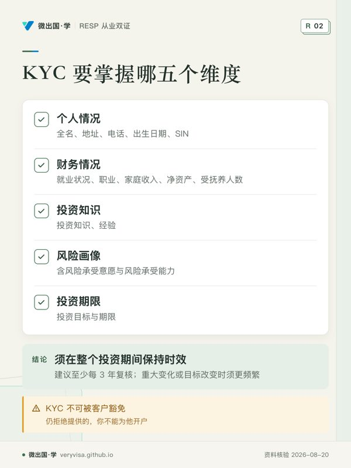
- 先看先看第四项：主观意愿和客观能力都要纳入，不能只问其一。
- 易漏法定改名要合法证明文件；纯打字错误无需额外文件但仍须书面请求。
- 下一步去练习，用开户情境检查是否漏问关键信息。
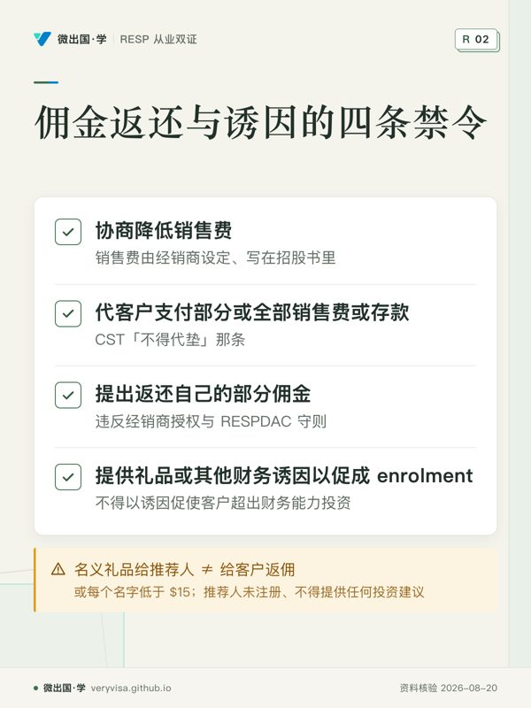
- 先看先把四种动作按「改价、代垫、返现、送利益」分开判断。
- 易漏一句分佣话术会同时触及经销商授权、RESPDAC 守则与 CST 的代垫边界。
- 下一步去练习，把客户侧诱因和推荐安排放进情境题里辨别。
监管地图：注册之后的两条时钟
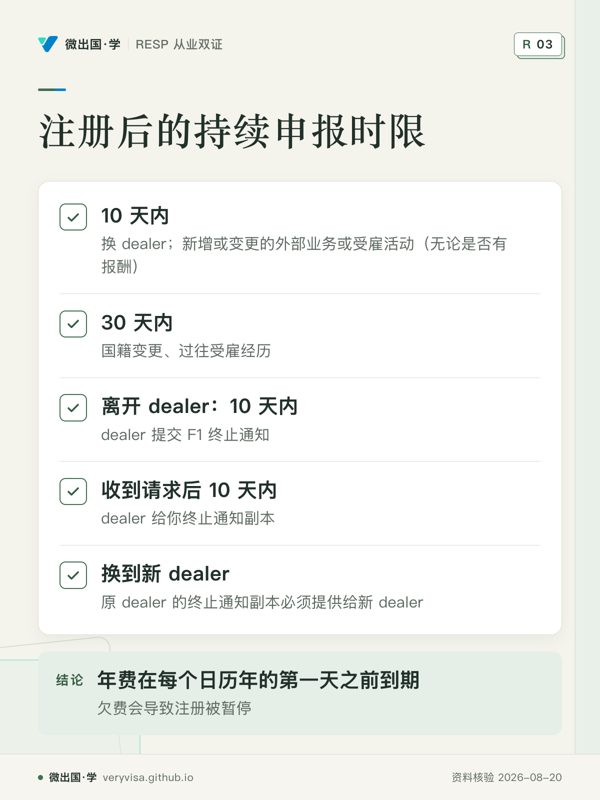
- 先看先按事件找期限；不同动作由不同主体完成，不能只背一个天数。
- 易漏终止通知还会写离职原因，以及未了结的客户、内部或监管问题。
- 下一步去练习，用离职、转会、资料变化三类情境判断责任方。
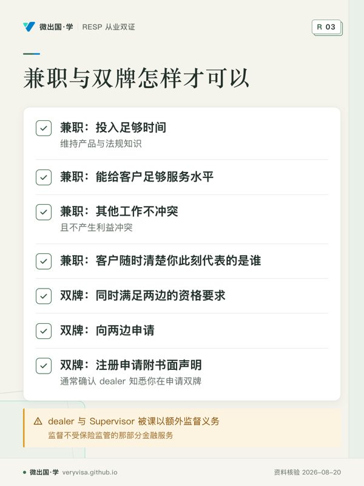
- 先看先分两组：前四项证明服务安排可行，后三项处理跨体系资格与申请。
- 易漏兼职是否可行还取决于当地监管机构立场与 dealer 政策，并非各地相同。
- 下一步去练习，分别验证服务安排与双边申请有没有缺项。
披露与费用：60 天和三层口径
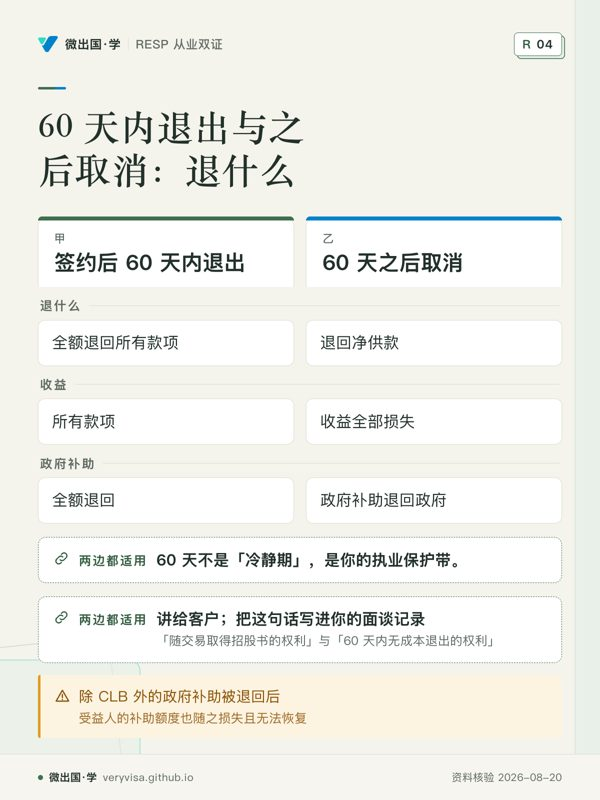
- 先看先对照两列同一行，别把「全额」与「净供款」当成同一口径。
- 易漏图外还有 withdrawal fee、depository fee，已缴保险费也归于损失。
- 下一步去讲解核对当年招股书；再把面谈记录带给从业代表。
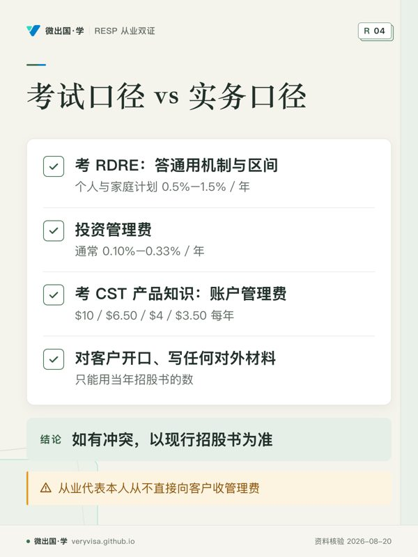
- 先看先按使用场景分层，不要把考试作答和客户沟通混成一套数字。
- 易漏旧题来源和当年披露可能不同；对外使用前回到现行招股书复核。
- 下一步去练习把题目按场景归类，再把实际客户数字交给持牌专业人士核对。
CST 产品线：三个在售计划与魁北克新规
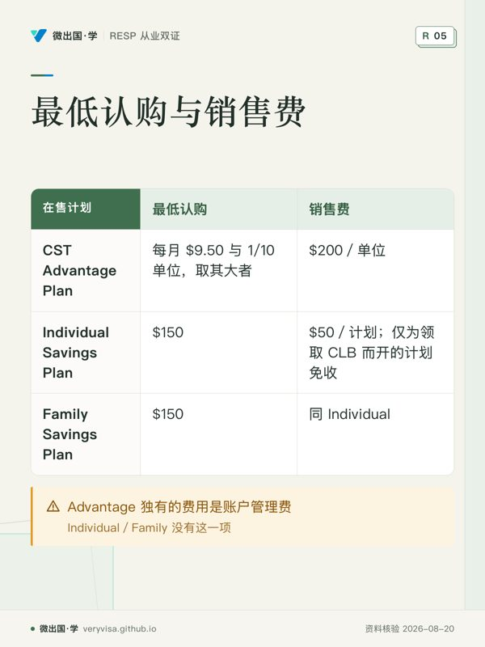
- 先看先从第一行看门槛与收费，再顺着两列往下比。
- 易漏Family 可在受益人之间调配收益与补助，这是表外最关键的选择差异。
- 下一步去讲义核对受益人资格，再把家庭结构带给持牌专业人士。
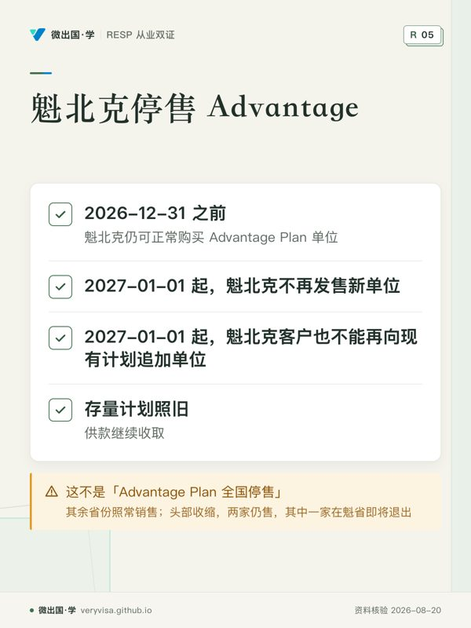
- 先看先把日期当分界，再区分新买与追加两个动作。
- 易漏这条变化考试口径完全没有，实务判断应回到招股书。
- 下一步去知识卡把地区和时点写成判断条件，个案再找持牌专业人士。
经济与证券基础：三种账户与奖学金计划单位
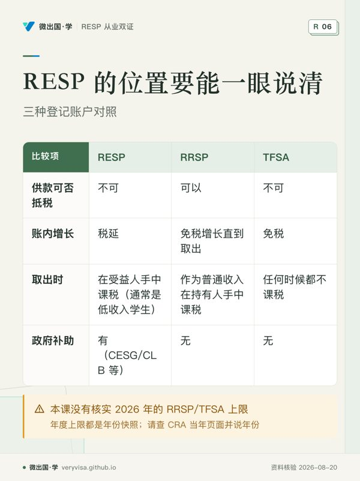
- 先看先看「取出时」这一行，三类账户的课税对象差异最直接。
- 易漏税务影响不应是投资决策的唯一考量。
- 下一步去练习，分别判断供款、增长、取出与补助。
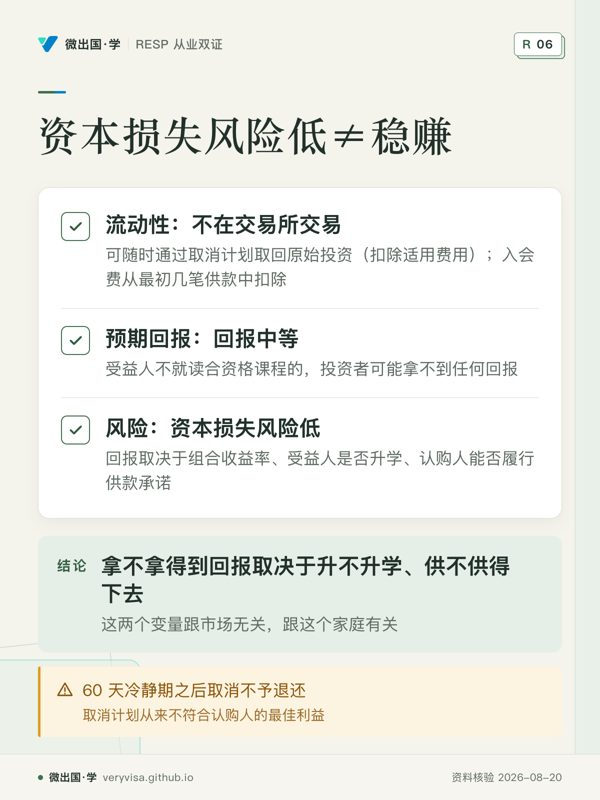
- 先看先看风险项，把市场风险与家庭条件分开判断。
- 易漏没有人保证回报，也没有人为投资损失提供保险；早期取消尤其不划算。
- 下一步去练习，遇到取消计划时先找可用的其他选项。
孩子已经 18 岁、或者我自己想读书，现在开 RESP 还有


孩子刚出生，RESP 第一年该做什么
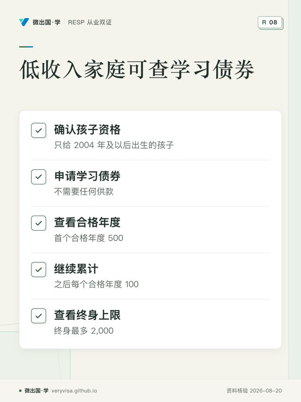
- 先看先看资格条件，再看累计方式。
- 易漏收入线会随孩子数不同，相关资格须核对。
- 下一步去看讲解，带收入和孩子情况找持牌专业人士。
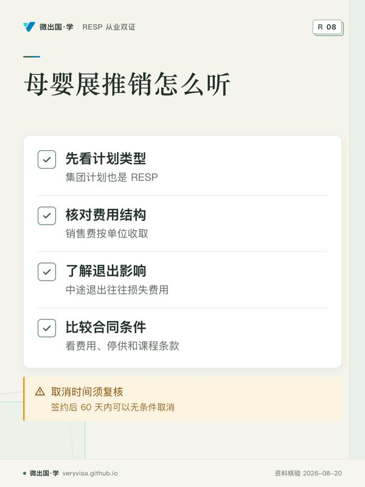
- 先看先看计划类型，别只看宣传名称。
- 易漏集团计划结构不同，费用和退出条件需逐项核对。
- 下一步去看对比，带合同问题找持牌专业人士。
孩子 10 岁才开始存 RESP，还能拿满 7,200 补助


孩子 15 岁了还能拿 RESP 补助吗：16、17 岁的两
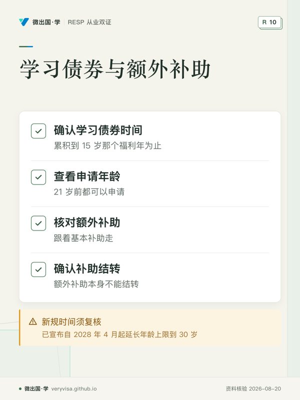
- 先看先看申请与累积规则，区分两种补助。
- 易漏额外补助受基本补助条件影响，需核对孩子情况。
- 下一步去看路线，带补助资格问题找持牌专业人士。
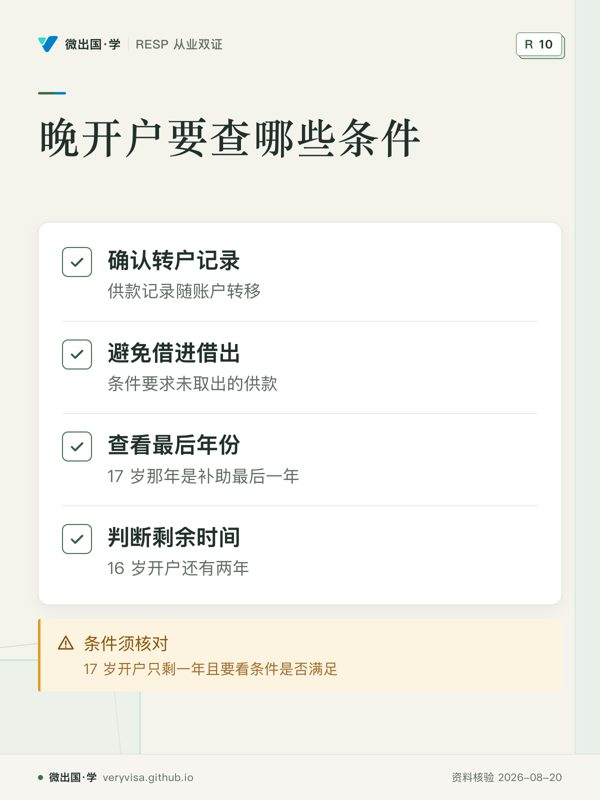
- 先看先看最后年份，判断时间是否充足。
- 易漏晚开户后的条件会减少，历史记录也要确认。
- 下一步去看练习，带开户时间找持牌专业人士。
孩子考上大学了，RESP 里的钱怎么取、要准备什么


BC 省 1,200 元 RESP 补助：6 岁生日到 9
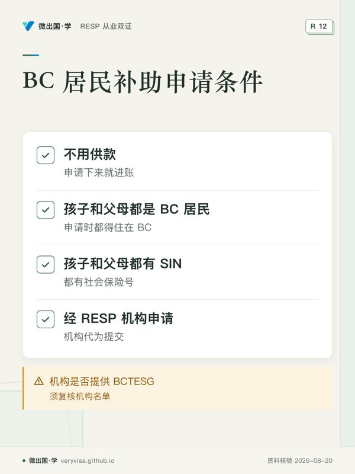
- 先看先看居民和 SIN 条件，它们决定是否进入申请范围。
- 易漏开了 RESP 不会自动收到，需要主动提交申请。
- 下一步看讲解，带资格问题找持牌专业人士。
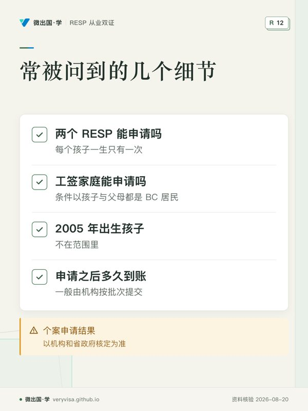
- 先看先看不同家庭情况的判断格，避免把补助理解错。
- 易漏临时居民与 SIN 到期日情况需按个案核定。
- 下一步看知识卡，带身份问题找持牌专业人士。
孩子没读书，RESP 收益转进 RRSP 就能免掉 20%
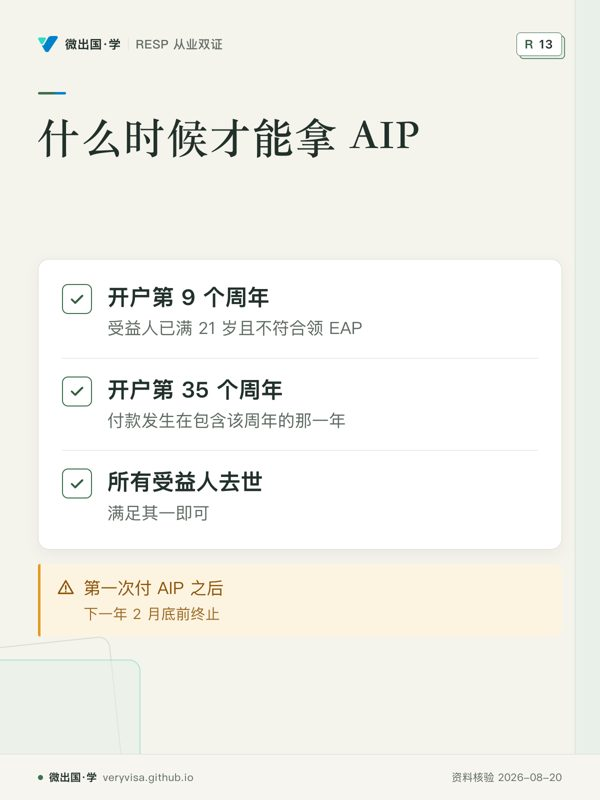
- 先看先看三个条件节点，判断是否进入 AIP 情形。
- 易漏不是孩子一说不读就能取，需满足条件。
- 下一步看讲解，带 RESP 收尾问题找持牌专业人士。
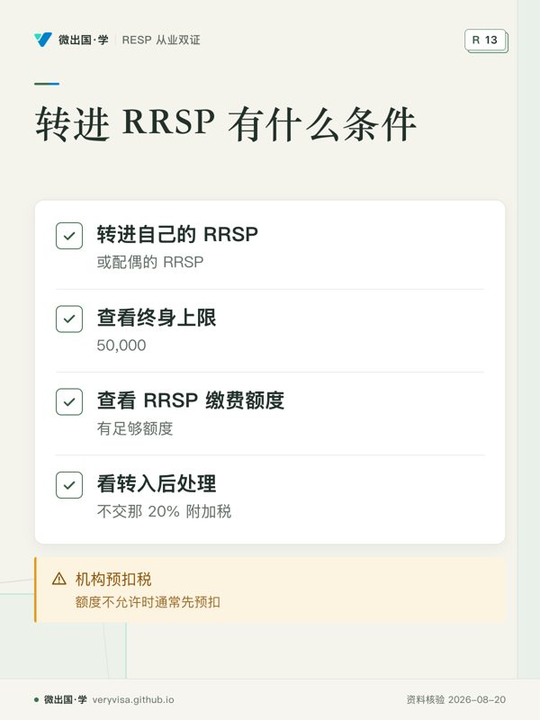
- 先看先看额度条件，决定转入 RRSP 是否可行。
- 易漏转入仍计入当年收入，扣除情况需核对。
- 下一步看讲义，带额度问题找持牌专业人士。
RESP 年度日历：每年该做的六件事，按月份排好
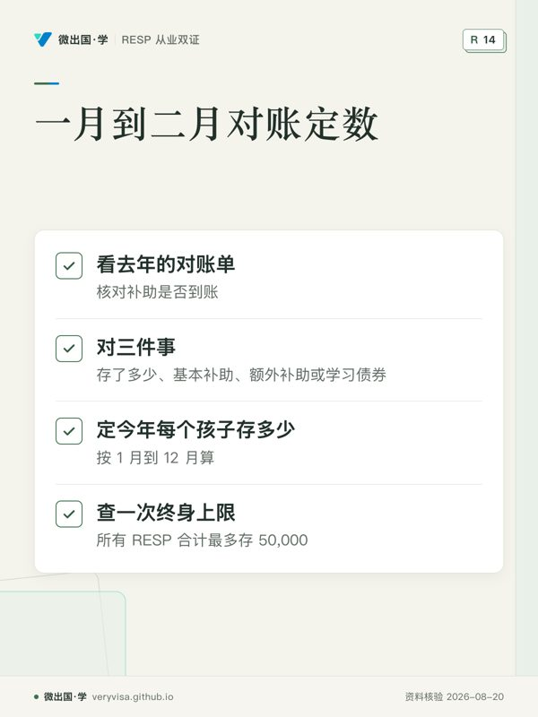
- 先看先看年初核对项目，找到遗漏的补助或供款。
- 易漏额度按日历年计算，家庭多人存款要互相通气。
- 下一步看进度，带供款安排找持牌专业人士。
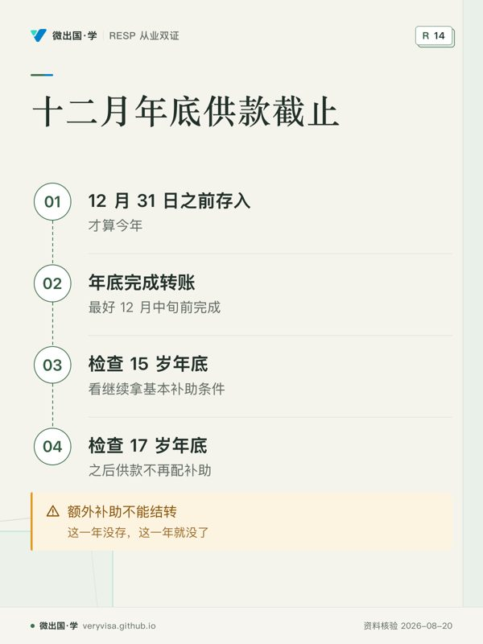
- 先看先看截止日期节点，判断当年供款是否有效。
- 易漏15 岁与 17 岁年底有不同规则，错过处理不同。
- 下一步看日历，带年龄节点问题找持牌专业人士。
RESP 不是孤立的：注册账户怎么一起帮家庭多拿钱
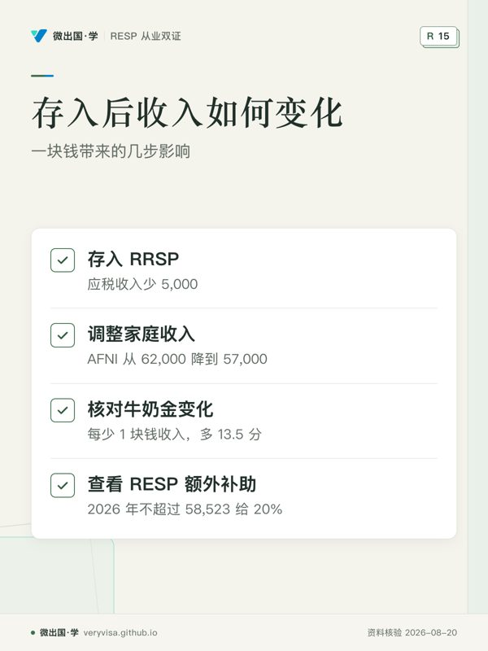
- 先看先看收入变化这一格，它决定后续福利计算。
- 易漏不同福利使用的收入口径和递减条件不同，需分别核对。
- 下一步去知识卡看家庭收入与补助问题。
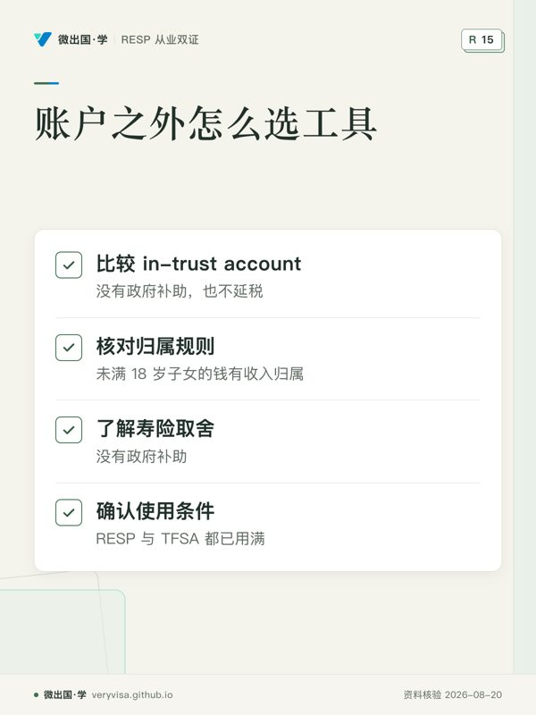
- 先看先看工具差异，判断目标是不是教育用途。
- 易漏账户归属、税务处理和长期锁定条件容易被忽略。
- 下一步去讲解看工具比较，带具体情况找专业人士。
顾问推荐的集团奖学金计划值不值得买，手里这份要不要退
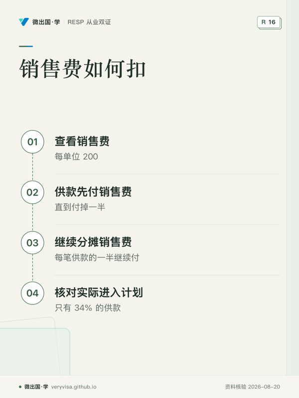
- 先看先看扣费顺序，判断供款去了哪里。
- 易漏不同供款方式和开户年龄会影响比例，具体要看招股书。
- 下一步去讲义看集团计划，带合同找专业人士。
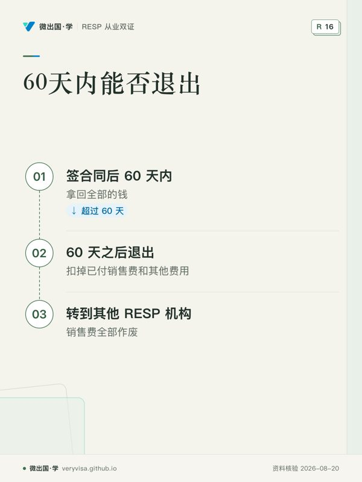
- 先看先看时间节点，它决定退出损失。
- 易漏转出时补助和收益处理要由机构按规则操作。
- 下一步去练习看退出情境，准备问题咨询专业人士。
单亲、离婚、祖父母出钱：RESP 该由谁开、离婚了怎么分
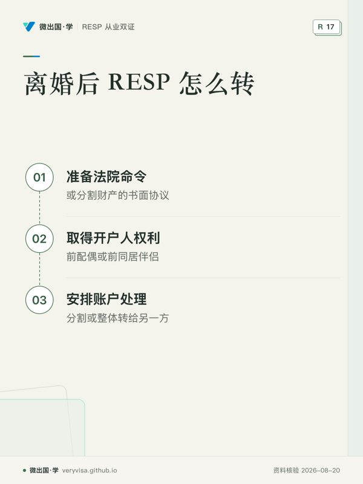
- 先看先看取得权利的条件，决定能否处理账户。
- 易漏RESP 财产分配属于家庭法问题，不同省份规定不同。
- 下一步去讲解看离婚规则，带协议找专业人士。
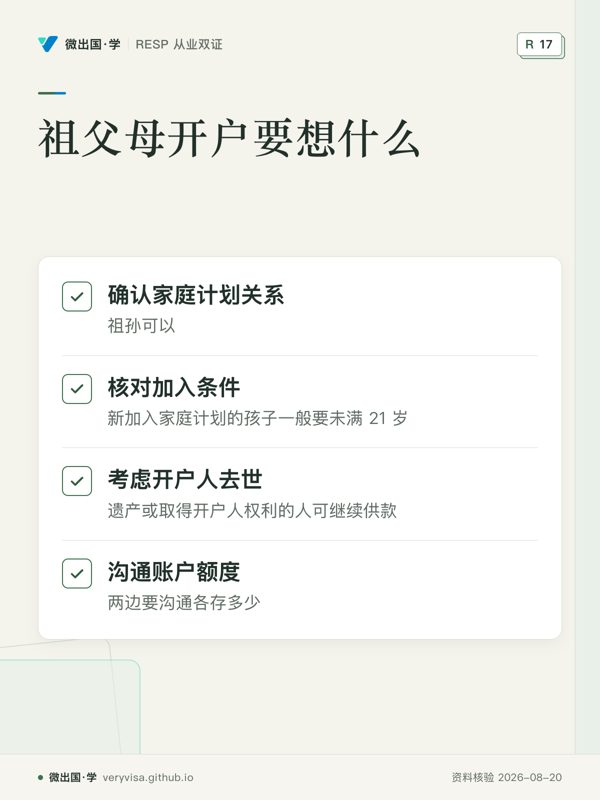
- 先看先看家庭计划关系，判断能否加入。
- 易漏堂兄弟之间转补助会受限制，具体以机构按规则判定。
- 下一步去路线看家庭身份，带家庭安排找专业人士。
刚落地加拿大第一年，RESP 排在第几位
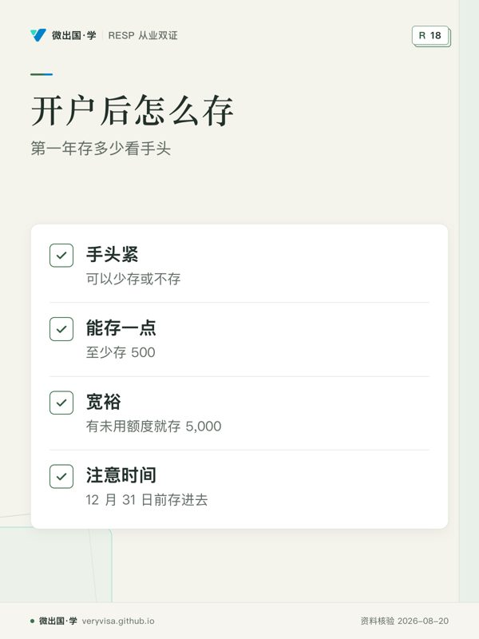
- 先看先看自身资金情况，再决定存款方式。
- 易漏学习债券不需要供款，补助按日历年计算。
- 下一步去进度看开户安排，带收入情况找专业人士。
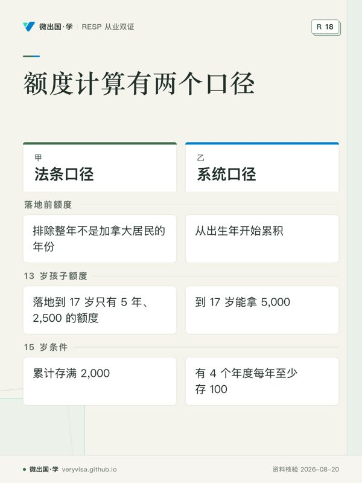
- 先看先看两个口径的差异，判断额度来源。
- 易漏两个口径存在差距，具体规则需要核对。
- 下一步去讲解看新移民追补，带孩子年龄找专业人士。
家庭收入不高，RESP 能多拿什么：额外补助和不用出钱的学习
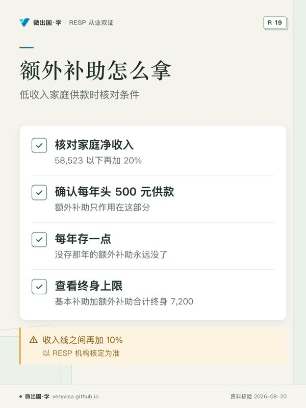
- 先看先看收入条件格，决定额外补助是否适用。
- 易漏额度不能结转，错过当年的额外补助不会像基本补助一样追补。
- 下一步去看知识卡，带家庭收入情况找持牌专业人士。
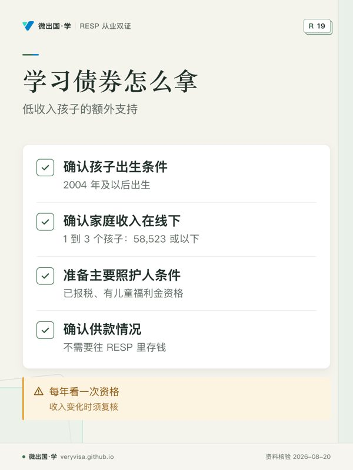
- 先看先看孩子和家庭条件，判断是否进入申请范围。
- 易漏不同孩子数量有不同收入线，临时居民家庭还要符合儿童福利金居住条件。
- 下一步去看讲解，带收入和居住情况找持牌专业人士。
公民和永居家庭的 RESP：身份不是关键，住在哪里才是
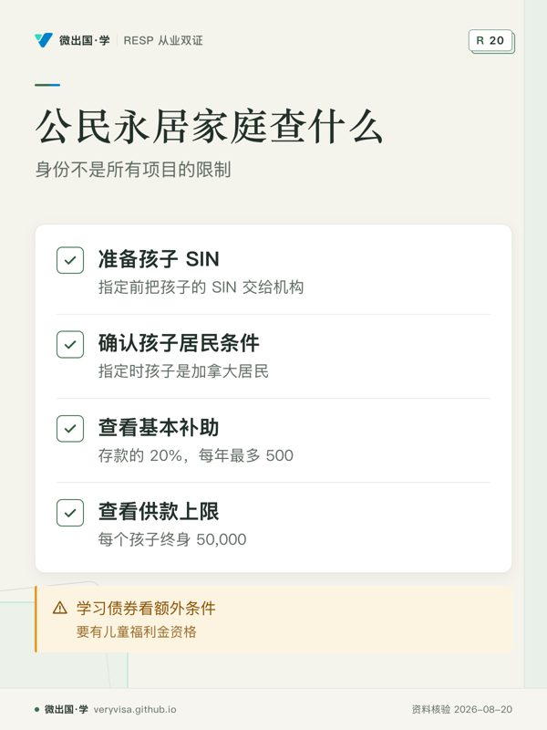
- 先看先看受益人条件，确认能否进入补助范围。
- 易漏居民指税务居民，不是永久居民；具体判断以 CRA 为准。
- 下一步去看讲义，整理身份和税务问题找持牌专业人士。
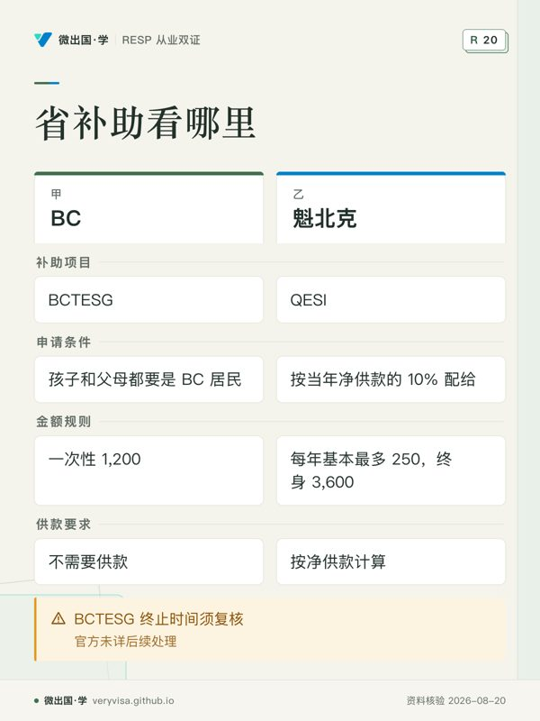
- 先看先看省份栏，判断对应的额外补助。
- 易漏搬离 BC 前孩子已满足条件的家庭要注意申请窗口。
- 下一步去看路线，带省份变化找持牌专业人士。
工签、学签家庭的孩子能拿 RESP 补助吗
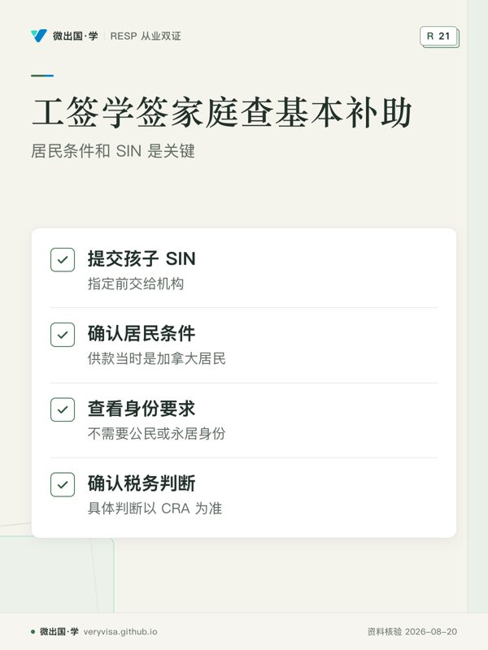
- 先看先看受益人条件，判断基本补助资格。
- 易漏居民是税务居民，不是永久居民，临时居民情况要单独判断。
- 下一步去看讲解，带居住情况找持牌专业人士。
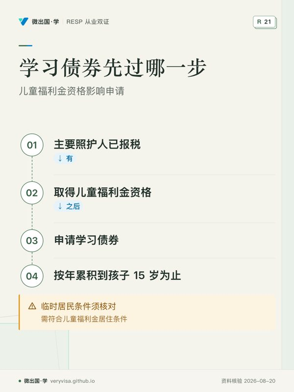
- 先看先看流程起点，确认家庭是否进入资格阶段。
- 易漏刚来的家庭通常不能立即取得儿童福利金资格。
- 下一步去看路线，带居住时间找持牌专业人士。
RESP 里该买什么：孩子越大越要保守吗，费率差 1% 差多
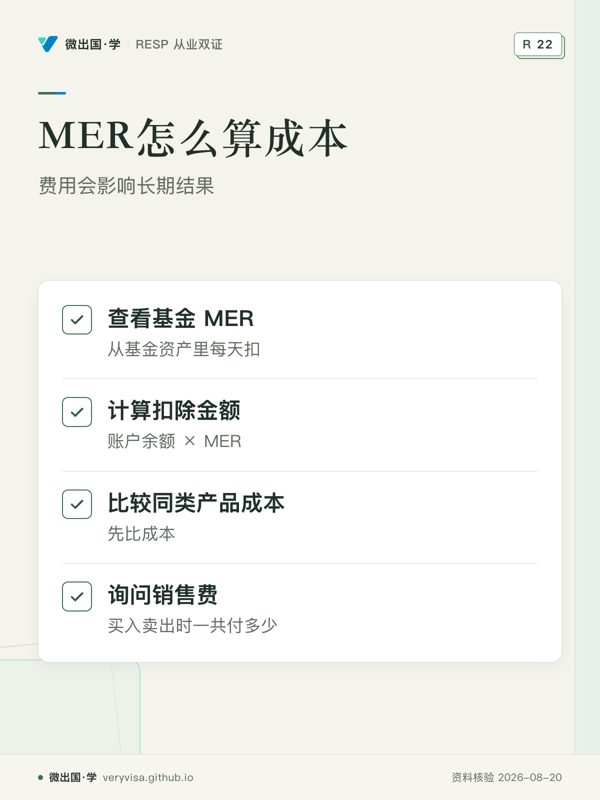
- 先看先看费用计算方式，理解钱从哪里减少。
- 易漏市场回报是不确定的收益，MER 是确定的成本。
- 下一步去看知识卡，带产品费用问题找持牌专业人士。
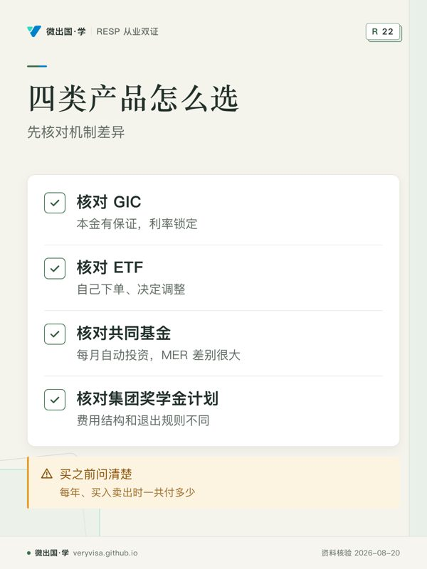
- 先看先看四类产品的机制差异，再判断是否适合自己的资金安排。
- 易漏产品都可在同一 RESP 框架下持有，集团计划有单独规则。
- 下一步去讲解页，再带费用问题找持牌专业人士。
RESP 最常见的 5 个误区：领补助不需要永居，这只是第一
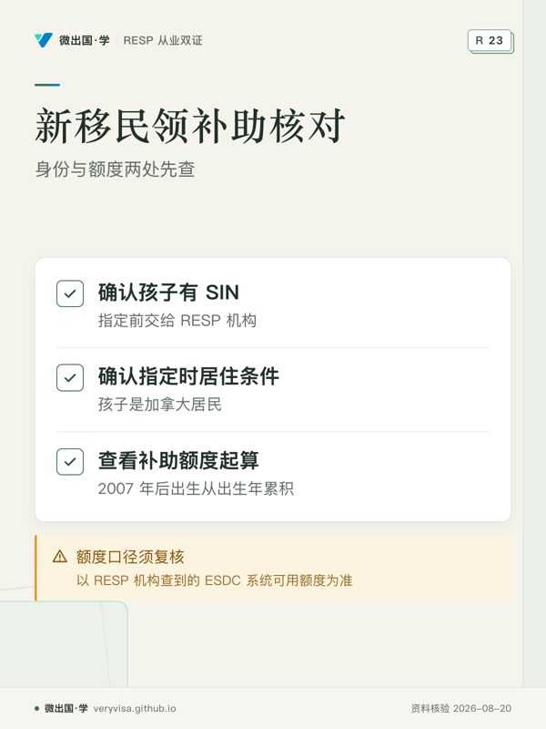
- 先看先看居住条件格，判断是否符合领补助条件。
- 易漏这里的居民是税务上的居民，不是永久居民；额度起算存在两种口径。
- 下一步看讲解页，带额度记录找持牌专业人士。
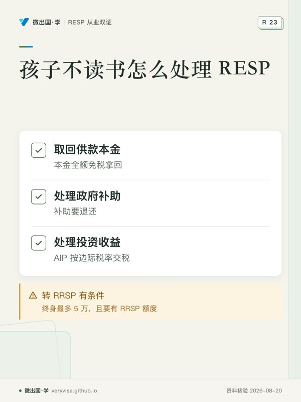
- 先看先看本金和补助两格，区分可取回与需处理部分。
- 易漏收益转入 RRSP 还受计划年限、年龄和额度条件限制。
- 下一步看知识卡，整理账户情况找持牌专业人士。
领 RESP 补助不需要永居身份，额度也不一定从落地那年才开
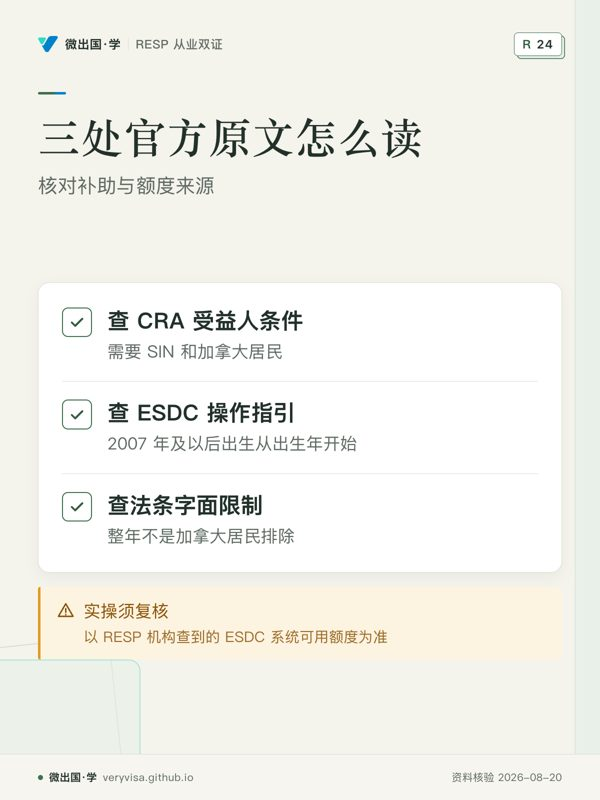
- 先看先看三项来源格，分别对应身份、额度、限制。
- 易漏法条字面与机构指引存在两种口径，需结合系统结果。
- 下一步看讲义，带额度问题找持牌专业人士。
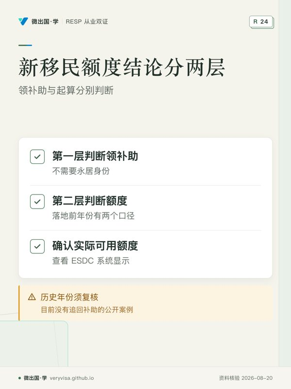
- 先看先看两层判断，分开身份问题和额度问题。
- 易漏落地前年份是否计入，正文列出不同依据。
- 下一步看规划页，带系统额度找持牌专业人士。
自己给孩子开 RESP：从办 SIN 到补助到账，一步一步
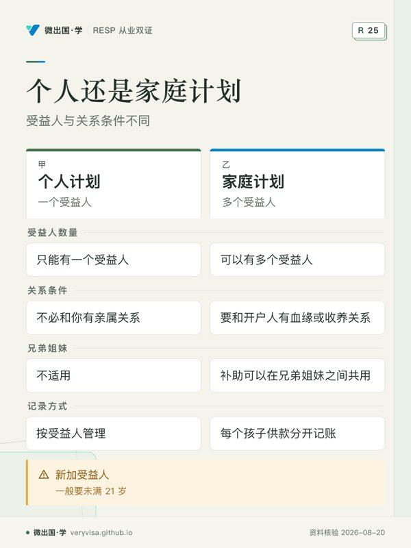
- 先看先看两栏的关系条件，决定哪类计划更符合家庭情况。
- 易漏家庭计划不等于一起存一笔钱，每个孩子补助按各自供款算。
- 下一步去知识卡，再带家庭关系问题找持牌专业人士。
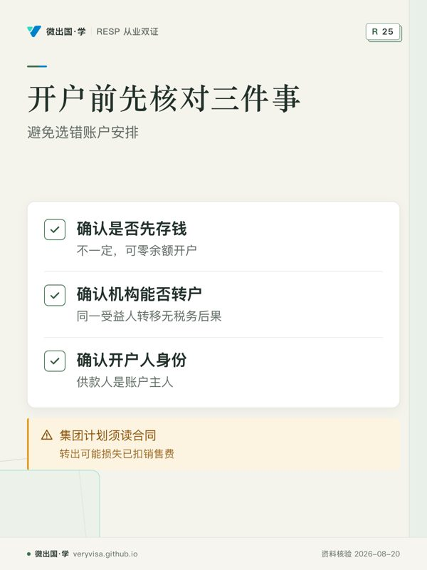
- 先看先看三件事，分别对应资金、机构和账户主人。
- 易漏不同计划的转户规则不同，集团计划另有风险。
- 下一步看讲义，整理情况找持牌专业人士。
住在魁北克，RESP 补助和别的省有什么不同：QESI 怎么
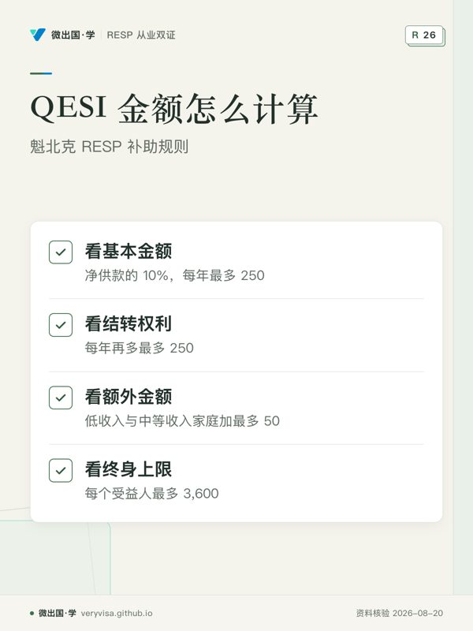
- 先看先看基本金额，判断计算起点。
- 易漏额外金额对应具体收入档位，以魁北克税务局公布为准。
- 下一步看知识卡，带收入情况找持牌专业人士。
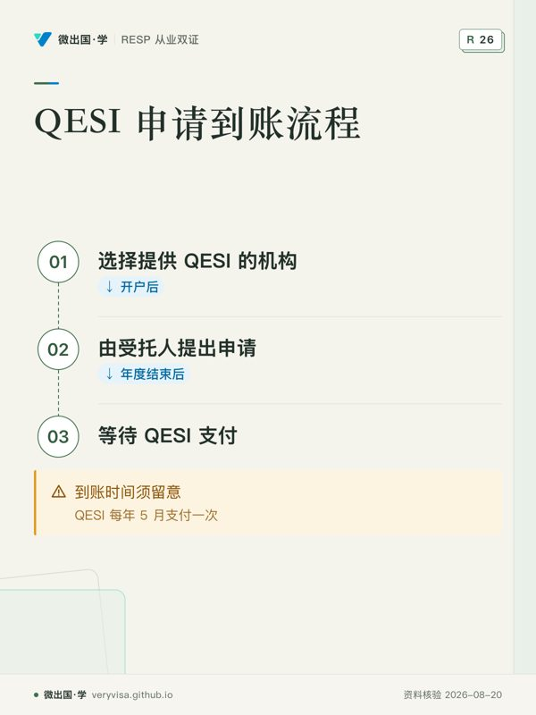
- 先看先看机构选择，决定是否能申请 QESI。
- 易漏联邦补助和 QESI 到账节奏不同。
- 下一步看讲解页，带机构问题找持牌专业人士。
孩子去美国、英国或回国读大学，RESP 还能取吗
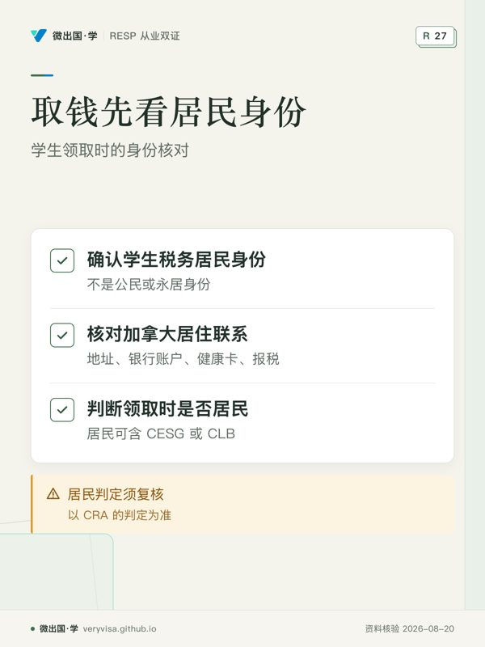
- 先看先看身份判断格，它决定补助部分能否进入 EAP。
- 易漏税务居民不是身份概念，出国读书与全家离境的情况不同。
- 下一步去讲解页核对居民身份，再带情况找持牌专业人士。
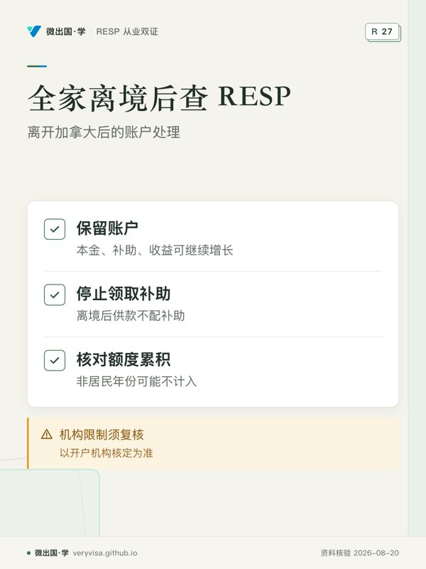
- 先看先看账户处理格，确认离境后哪些还能继续。
- 易漏非居民身份会影响补助与额度，回来后的条件另需核对。
- 下一步去知识卡页查看离境安排，再带家庭计划找持牌专业人士。
老大不读大学，RESP 的钱能给老二用吗
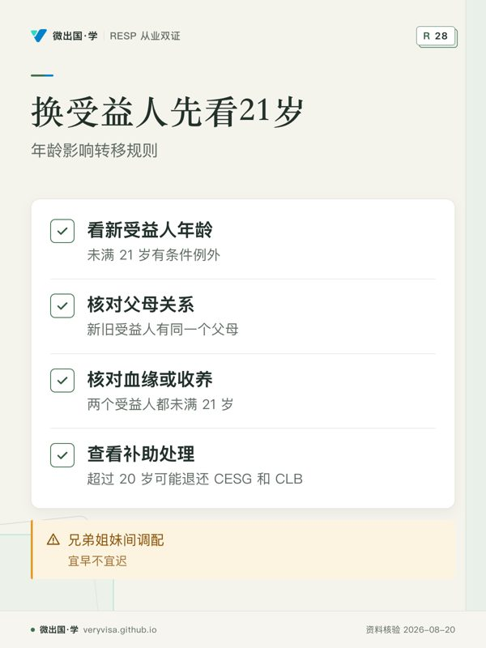
- 先看先看年龄条件，它决定转移时的处理方式。
- 易漏家庭计划新加入受益人也有年龄和关系条件。
- 下一步去讲义，再带转移问题找持牌专业人士。
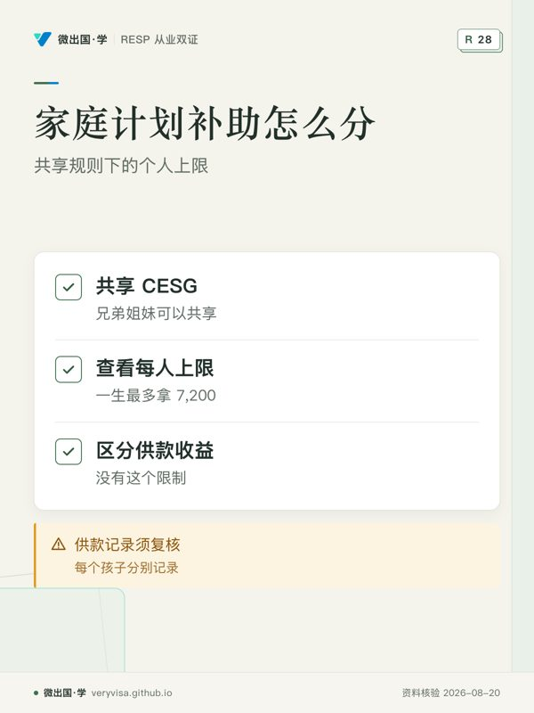
- 先看先看个人上限格，它限制补助流向。
- 易漏共享的是补助，不代表所有钱都受同一规则限制。
- 下一步去讲义页核对家庭计划，再带记录找持牌专业人士。
RESP 的开户人去世或父母离婚，账户归谁、还能不能继续
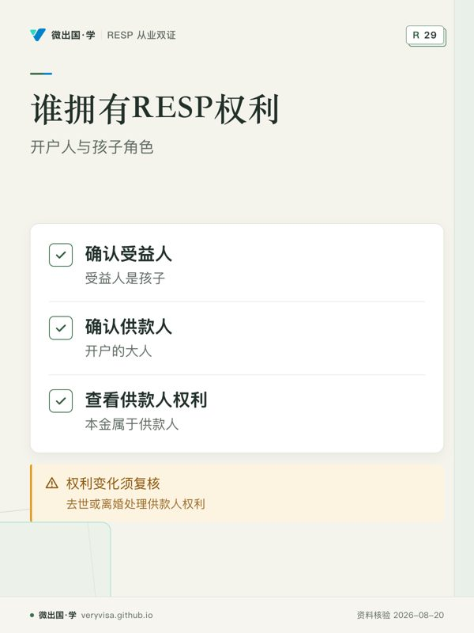
- 先看先看角色区分，避免把孩子和账户权利混淆。
- 易漏不同事件影响的是供款人权利，不是孩子权利。
- 下一步去讲解页查看账户关系，再带情况找持牌专业人士。
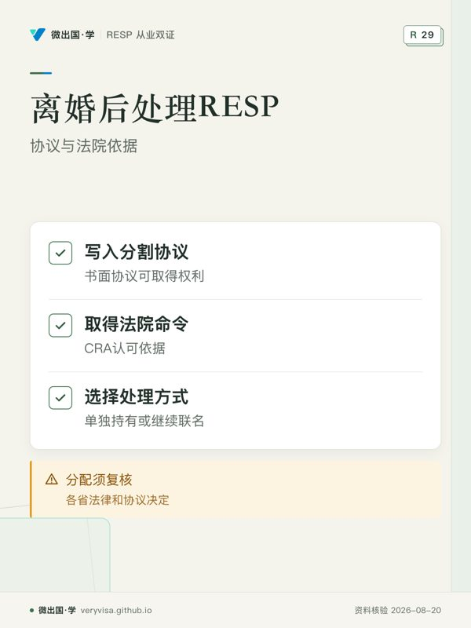
- 先看先看依据格，确认权利变化需要什么文件。
- 易漏RESP本金属于供款人，离婚处理不是孩子账户变化。
- 下一步去讲解页查看离婚安排，再带文件找持牌专业人士。